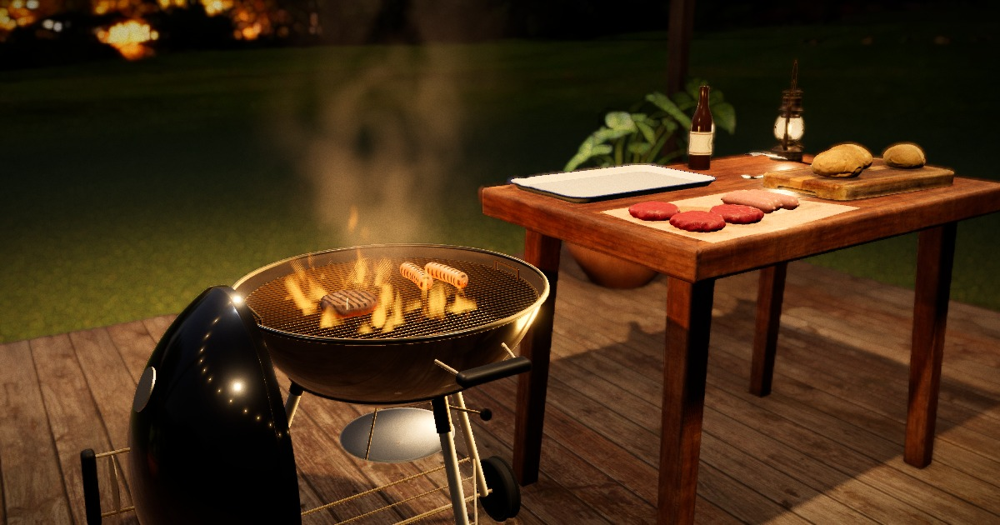

Browser experiments
One folder per test. Every test is a static page with no build step: open it and it runs.

A charcoal kettle on a garden deck at night, rendered live. Orbit the scene, drag burgers and sausages onto the grate, flip them, watch them sear, and stoke the coals.